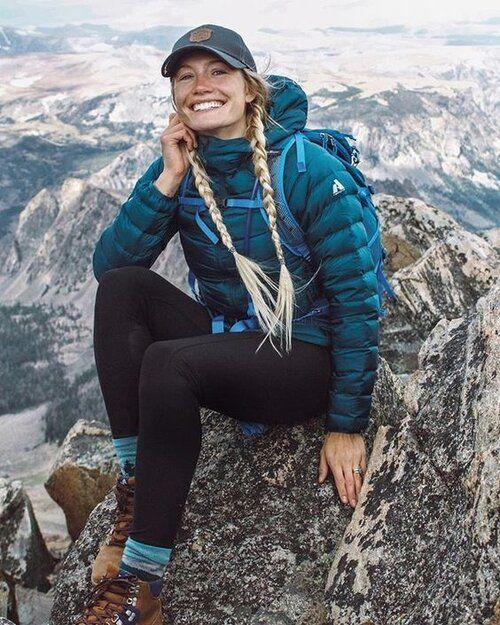
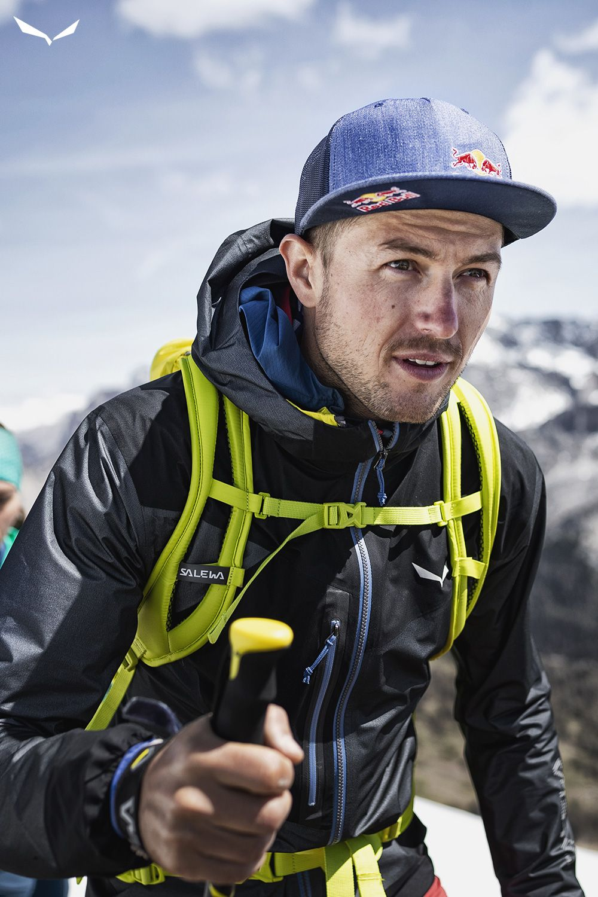
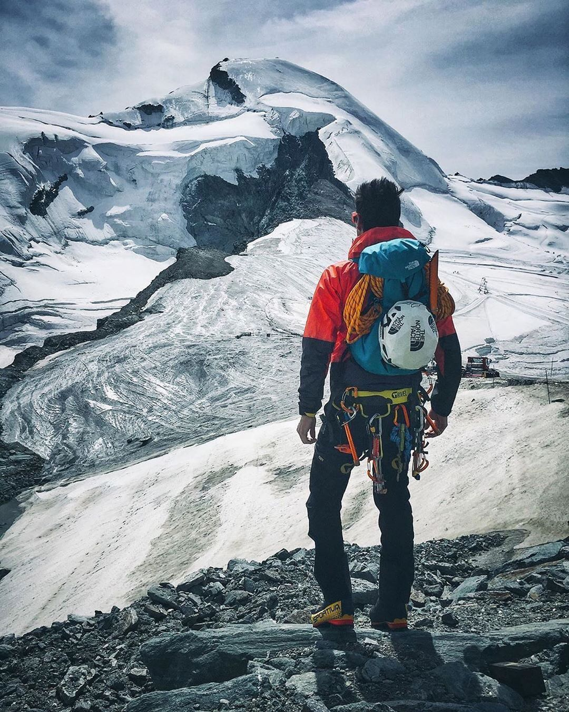

Bienvenido a nuestra página web de turismo en montaña en Linares, Chile. Aquí encontrarás
todo lo que necesitas para planificar una aventura inolvidable en este hermoso destino de montaña.
Lugar, Cerca
Linares es un lugar único en Chile, ubicado en la región del Maule, que ofrece un entorno
natural impresionante con majestuosas montañas, valles verdes y ríos cristalinos. Nuestra página web está
diseñada para brindarte información detallada sobre las atracciones turísticas, actividades al aire libre y
servicios disponibles en esta región montañosa.
Senderos, Cerca
Bienvenidos a nuestra emocionante actividad de senderos de roca en Linares. Únete a nosotros
para disfrutar de una experiencia única en medio de la naturaleza montañosa de esta hermosa región en Chile.
Caminatas, Cerca
Nuestras caminatas cerca de Linares te llevarán por senderos pintorescos y fascinantes.
Acompañado por nuestros guías expertos, explorarás paisajes diversos que incluyen bosques frondosos, cascadas
refrescantes y vistas panorámicas impresionantes.
Sobre Nosotros
Linares es un lugar único en Chile, ubicado en la región del Maule, que ofrece un entorno natural
impresionante con majestuosas montañas, valles verdes y ríos cristalinos. Nuestra página web está diseñada
para brindarte información detallada sobre las atracciones turísticas, actividades al aire libre y servicios
disponibles en esta región montañosa.
Explora nuestras secciones dedicadas a las rutas de senderismo, donde encontrarás descripciones detalladas de
las mejores rutas de montaña en Linares, junto con mapas, consejos y recomendaciones para cada nivel de
experiencia. Desde senderos suaves hasta desafiantes ascensos, hay opciones para todos los gustos y
habilidades.
Además de las rutas de senderismo, te presentamos una amplia gama de actividades emocionantes que puedes
disfrutar en la montaña de Linares. Desde escalada en roca hasta paseos en bicicleta de montaña, parapente y
rafting, hay aventuras para los amantes de la adrenalina. Si prefieres un enfoque más relajado, puedes
disfrutar de la observación de aves, la pesca en ríos cristalinos o simplemente maravillarte con los paisajes
impresionantes.
Montaña
En nuestra página web también encontrarás información sobre alojamientos en la
montaña, desde acogedores refugios de montaña hasta cabañas y hoteles con vistas panorámicas. También te ofrecemos
recomendaciones sobre restaurantes locales, donde podrás degustar la deliciosa gastronomía regional después de un
día lleno de aventuras.

Información turística
Proporcionamos información detallada sobre las atracciones
turísticas, puntos de interés y lugares destacados de la región montañosa de Linares. Esto incluye
descripciones, recomendaciones y consejos para que puedas planificar tu itinerario de manera eficiente.

Rutas de senderismo
Presentamos una selección de rutas de senderismo populares y
emocionantes en Linares. Ofrecemos descripciones detalladas de cada ruta, incluyendo nivel de
dificultad, distancia, tiempo estimado de recorrido, mapas y puntos destacados a lo largo del camino.

Actividades al aire libre
Te proporcionamos información sobre una amplia gama de
actividades al aire libre disponibles en la montaña de Linares. Esto incluye escalada en roca, paseos en
bicicleta de montaña, parapente, rafting, observación de aves, pesca y más.
Nuestro Objetivo
Nuestro objetivo es brindarte una experiencia integral y enriquecedora en la
montaña de Linares, ofreciéndote todos los servicios y recursos necesarios para que puedas disfrutar al máximo
de esta hermosa región natural.
Ponerse en contacto
Rellena el formulario para iniciar una conversación